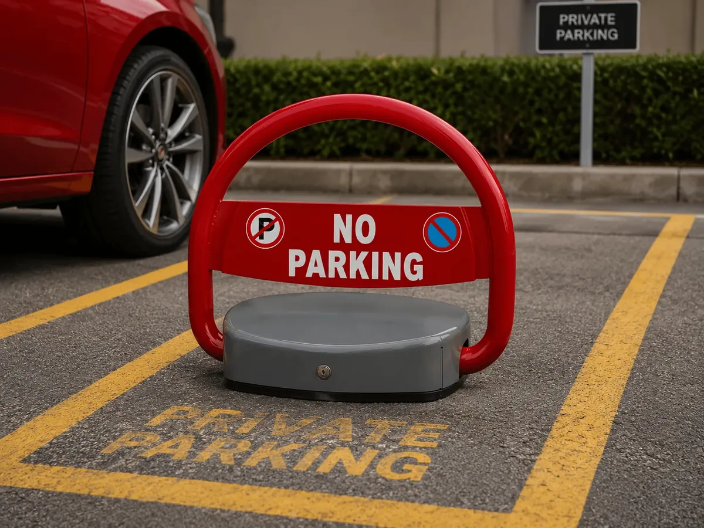
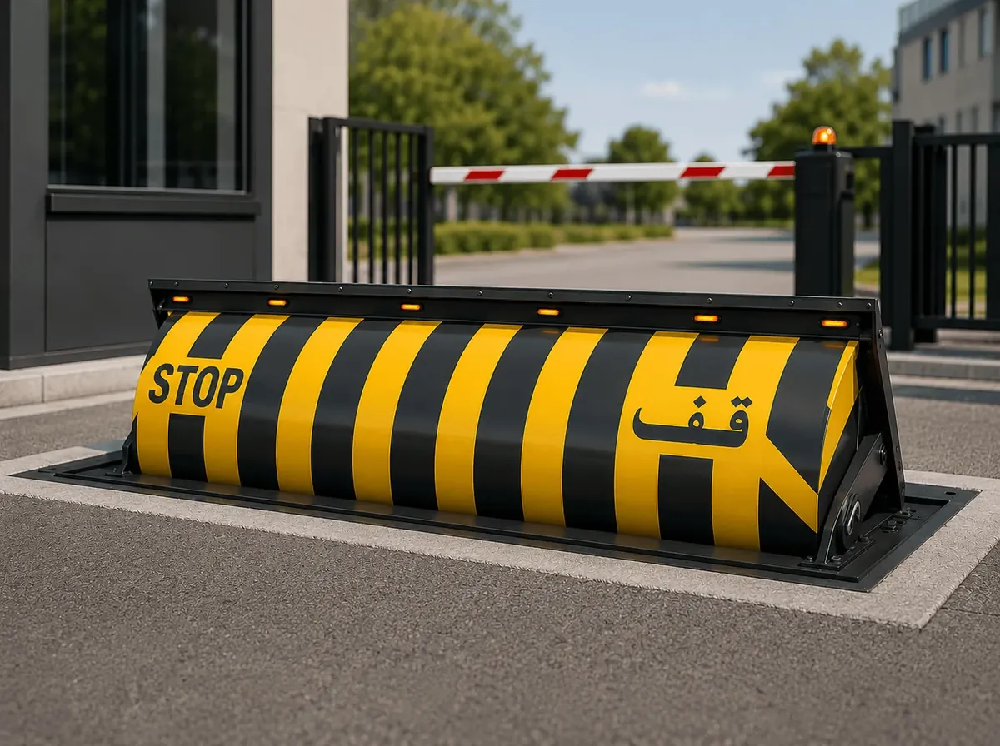
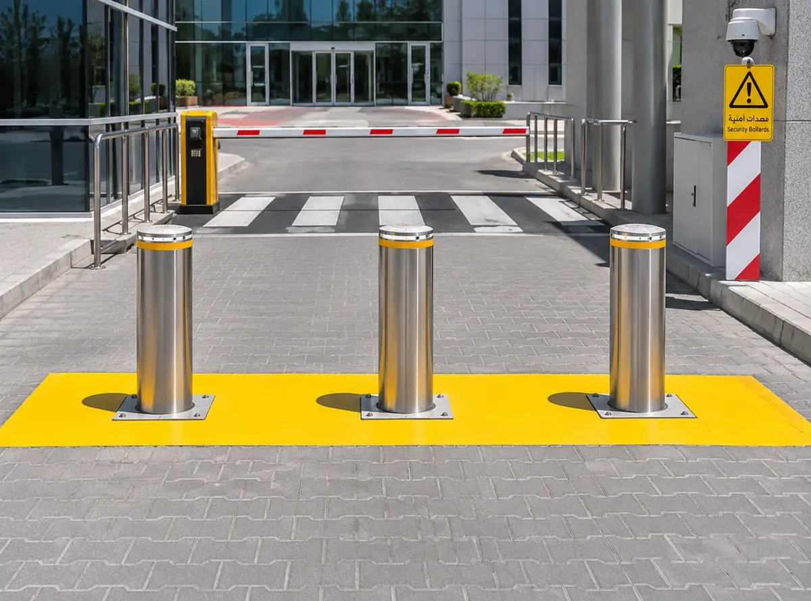
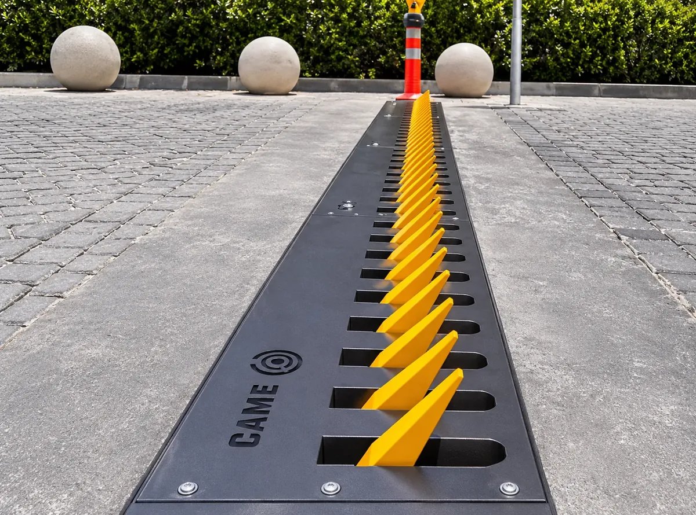
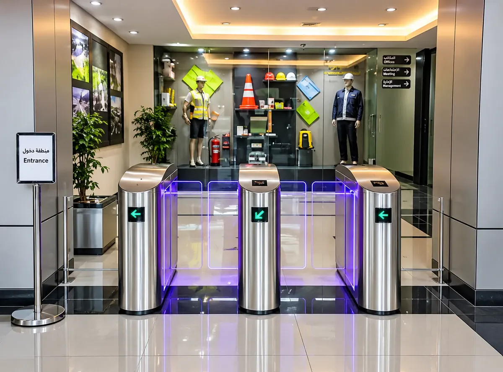
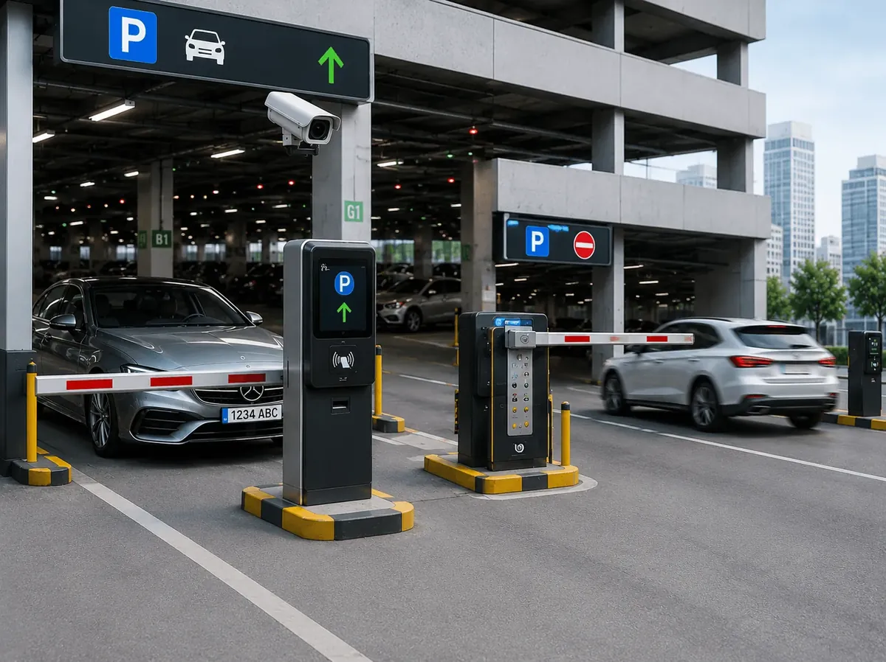
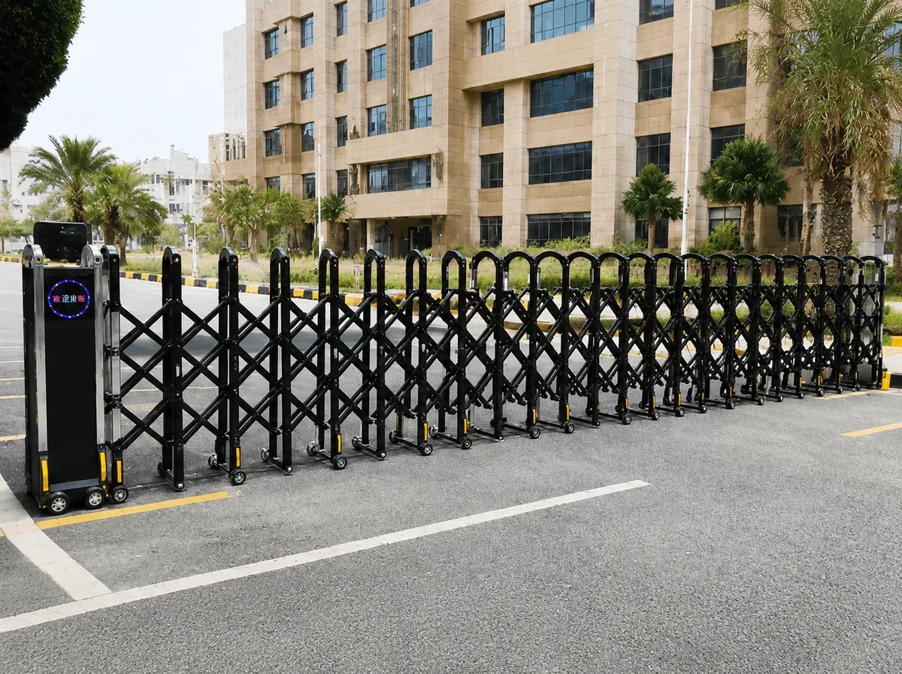
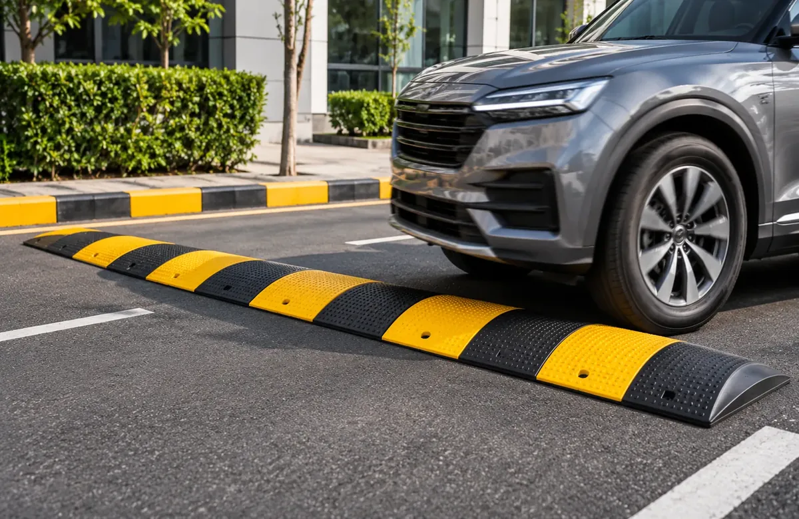

حواجز مواقف سيارات وأنظمة أمنية للمداخلParking Barriers and Entrance Security Systems
حواجز مواقف سيارات وأنظمة أمنية للمداخل من مدار رندا: حواجز أوتوماتيكية، ومصدات هيدروليكية، وأعمدة أمنية، وبوابات عبور أفراد، وأنظمة إدارة مواقف. نقدم التوريد والتركيب والبرمجة والصيانة في جميع مدن القصيم، مع توفر قطع الغيار والدعم الفني بعد التركيب.Parking barriers and entrance security systems from Madar Randa: automatic barriers, hydraulic blockers, security bollards, pedestrian access gates and parking management systems. We provide supply, installation, programming and maintenance across all cities of Al-Qassim, with spare parts and technical support after installation.
حلول مدار رندا لتنظيم المداخل والمواقف وتأمين المنشآتMadar Randa Solutions for Entrance Control, Parking and Facility Security









حواجز وبوابات مواقف السيارات الأوتوماتيكيةAutomatic Parking Barriers and Gates
تحكّم في دخول المركبات وخروجها باستخدام حواجز مداخل السيارات ذات الذراع المتحرك (Barrier Gate). تناسب مداخل المجمعات السكنية والشركات والمراكز التجارية والمنشآت الحكومية.Control vehicles entering and leaving with arm-type vehicle entrance barriers (Barrier Gate). Suitable for the entrances of residential compounds, companies, shopping centers and government facilities.
نساعدك في اختيار بوابات دخول وخروج السيارات وفق عرض المدخل وكثافة حركة المركبات ووسيلة التحكم المطلوبة.We help you choose vehicle entry and exit gates according to the entrance width, traffic volume and required control method.
خيارات التجهيز والتحكم:Equipment and control options:هذه الحواجز مخصصة لتنظيم المرور؛ أما المداخل التي تتطلب مقاومة اصطدام فتحتاج إلى تقييم وتجهيزات أمنية مخصصة.These barriers are intended for traffic control; entrances that require crash resistance need assessment and dedicated security equipment.
حواجز مواقف بالريموت لحجز الموقف الخاصRemote-Controlled Barriers for Private Parking
احفظ موقفك المخصص من الاستخدام غير المصرح به باستخدام حاجز موقف للسيارة يعمل بالريموت كنترول (Parking Lock) يُثبت داخل مساحة الوقوف، ويرتفع لحجزها وينخفض للسماح باستخدامها.Protect your reserved space from unauthorized use with a remote-controlled parking barrier (Parking Lock) fixed inside the space, which rises to reserve it and lowers to allow use.
حاجز مواقف مناسب لمواقف الأفراد والموظفين والمواقف المحجوزة داخل المجمعات والمنشآت.A parking barrier suited to private, staff and reserved parking spaces within compounds and facilities.
ما نحدده عند الاختيار:What we determine when choosing:حواجز مواقف بالريموت لحجز الموقف الخاصRemote-Controlled Barriers for Private Parking
مصدات هيدروليكية أمنيةHydraulic Security Blockers
تحكّم في مرور المركبات عند المداخل التي تتطلب تجهيزات أمنية مخصصة، مع مصدات هيدروليكية تُختار وفق طبيعة المنشأة ومتطلبات المشروع.Control vehicle passage at entrances that require dedicated security equipment, with hydraulic blockers chosen according to the facility and project requirements.
مصدات أرضية مدمجةIn-ground blockers
تُركب داخل الأرض، ويرتفع الجزء الحاجز منها لاعتراض مسار المركبات.Installed in the ground, with the barrier section rising to block the vehicle path.
مصدات سطحيةSurface-mounted blockers
تُثبت فوق سطح الطريق وفق متطلبات تركيب النظام.Fixed on the road surface according to the system's installation requirements.
مصدات متنقلةMobile blockers
للمداخل والمواقع الأمنية المؤقتة التي تحتاج إلى إمكانية نقل التجهيزات وإعادة استخدامها.For temporary security entrances and sites that need equipment that can be moved and reused.
تختلف متطلبات الأعمال المدنية والتثبيت بين الأنظمة. وعند اشتراط مقاومة اصطدام محددة، يُختار الموديل بناءً على تصنيفه ووثائقه الفنية المطابقة لمتطلبات المشروع.Civil works and mounting requirements differ between systems. Where a specific crash resistance is required, the model is chosen based on its rating and technical documents matching the project requirements.
الأعمدة الأمنية والحواجز الأنبوبية – BollardsSecurity Bollards and Tube Barriers – Bollards
حدّد مناطق مرور السيارات واحمِ مداخل المشاة باستخدام الأعمدة الأمنية (Bollards) وأعمدة مواقف السيارات. تناسب الفنادق والمنشآت الحكومية والساحات والمداخل التي تحتاج إلى التحكم في المركبات مع الحفاظ على انسيابية حركة الأفراد.Define vehicle zones and protect pedestrian entrances with security bollards and parking posts. Suitable for hotels, government facilities, plazas and entrances that need vehicle control while keeping pedestrian flow smooth.
أعمدة هيدروليكية متحركةRetractable hydraulic bollards
ترتفع وتنخفض للتحكم في مرور المركبات.Rise and lower to control vehicle passage.
أعمدة ثابتةFixed bollards
لتحديد المناطق الممنوع دخول السيارات إليها.To mark areas vehicles are not allowed to enter.
أعمدة يدوية أو قابلة للإزالةManual or removable bollards
للمداخل التي تحتاج إلى فتح المسار عند الحاجة.For entrances where the path needs to be opened when required.
نحدد الخامة والمقاس والمسافات بين الأعمدة وفق الاستخدام. وإذا كان المطلوب حماية من اصطدام المركبات، نراجع تصنيف مقاومة الاصطدام للموديل المطلوب.We define the material, size and spacing between bollards according to use. If protection from vehicle impact is required, we review the crash-resistance rating of the requested model.
الشوك الأرضية الأمنيةSecurity Road Spikes
تحكّم في اتجاه مرور المركبات أو امنع العبور غير المصرح به باستخدام الشوك الأرضية، مع تحديد النظام المناسب لمسار الحركة وطبيعة المدخل.Control the direction of vehicle traffic or prevent unauthorized passage with road spikes, with the system chosen to suit the traffic path and type of entrance.
خيارات التشغيل والتركيب:Operation and installation options:تُراجع اتجاهات المرور ووسائل التنبيه والتحكم ضمن تجهيز الموقع.Traffic directions, warning devices and controls are reviewed as part of the site setup.
بوابات أمنية لعبور الأفرادPedestrian Security Gates
نظّم دخول الموظفين والزوار باستخدام بوابات أمنية إلكترونية تناسب مداخل الشركات والمباني الإدارية والملاعب ومحطات النقل.Manage employee and visitor entry with electronic security gates suited to company entrances, office buildings, stadiums and transport stations.
الحلول المتاحة:Available solutions:نراجع عدد المستخدمين وحركة الدخول والخروج وعرض الممرات، مع مراعاة احتياجات الإتاحة والإخلاء عند اختيار النظام.We review the number of users, entry and exit traffic and lane widths, taking accessibility and evacuation needs into account when choosing the system.
أنظمة إدارة مواقف السياراتParking Management Systems
أدر التصاريح والدخول والخروج والرسوم من خلال أنظمة إدارة مواقف السيارات. نوفر حلولًا للمواقف التجارية والخاصة، مع تحديد التجهيزات والتكاملات المطلوبة وفق احتياجات منشأتك ونطاق المشروع.Manage permits, entry, exit and fees with parking management systems. We provide solutions for commercial and private car parks, defining the equipment and integrations required according to your facility's needs and project scope.
التحكم في الدخولAccess control
بالكروت الإلكترونية أو قارئ RFID.With electronic cards or an RFID reader.
إدارة الرسومFee management
أنظمة تحصيل ودفع آلي أو يدوي.Automatic or manual collection and payment systems.
تسجيل الحركةTraffic logging
كاميرات وأنظمة لتسجيل دخول المركبات وخروجها.Cameras and systems to record vehicles entering and leaving.
إرشاد السياراتParking guidance
تحديد المواقف المتاحة والمشغولة وتوجيه المستخدمين إليها.Identifying available and occupied spaces and guiding users to them.
يمكن تجهيز النظام بالوظائف التي تحتاجها المنشأة، مع مراجعة توافق الأجهزة والبرامج قبل التنفيذ.The system can be equipped with the functions your facility needs, with hardware and software compatibility reviewed before implementation.
الحواجز المنطوية المتحركةMobile Retractable Barriers
حل لتنظيم المسارات وإغلاق المداخل عند الحاجة، مع خيارات معدنية متحركة بعجلات وتشغيل يدوي أو كهربائي وفق الموديل.A solution for organizing lanes and closing entrances when needed, with mobile metal options on wheels and manual or electric operation depending on the model.
الحواجز المنطوية المتحركةMobile Retractable Barriers
المطبات الصناعيةSpeed Bumps
تساعد على تهدئة سرعة المركبات داخل المواقف والمداخل والطرق الداخلية. يُحدد نوعها ومقاسها وموقع تركيبها وفق حركة السيارات وطبيعة المسار.They help slow vehicles within car parks, entrances and internal roads. Their type, size and installation location are defined by vehicle traffic and the type of path.
المطبات الصناعيةSpeed Bumps
لماذا تختار مدار رندا؟Why Choose Madar Randa?
حلول متكاملة من اختيار النظام حتى التركيبIntegrated solutions from choosing the system to installation
مع مدار رندا، شركة حواجز أمنية وأنظمة مواقف في القصيم، نساعدك في تجهيز المداخل والمواقف بما يناسب طبيعة الموقع ومتطلبات التشغيل.With Madar Randa, a security barrier and parking systems company in Al-Qassim, we help you equip entrances and car parks to suit the site and its operating requirements.
اختيار مناسبThe Right Choice
حسب طبيعة الموقع وكثافة الحركة ومتطلبات التشغيل والتحكم.Based on the site, traffic volume, and operating and control requirements.
تنفيذ متكاملComplete Delivery
تركيب وبرمجة واختبار النظام قبل التسليم.Installation, programming and testing of the system before handover.
قطع غيار متوفرةSpare Parts Available
نوفر قطع الغيار لجميع المنتجات.We provide spare parts for all products.
تجارب عملائناOur Clients' Experiences
اطلع على تقييمات عملائنا المنشورة على Google، وتعرّف على تجاربهم مع خدمات مدار رندا.See our clients' reviews published on Google, and learn about their experiences with Madar Randa services.
الأسئلة الشائعةFrequently Asked Questions
اختر نظامًا يناسب مدخل منشأتك ومواقفهاChoose a System That Suits Your Facility's Entrance and Parking
أرسل صورة المدخل أو مخطط المواقف، واحصل على عرض يناسب منشأتك.Send a photo of the entrance or your parking plan, and get a proposal that suits your facility.